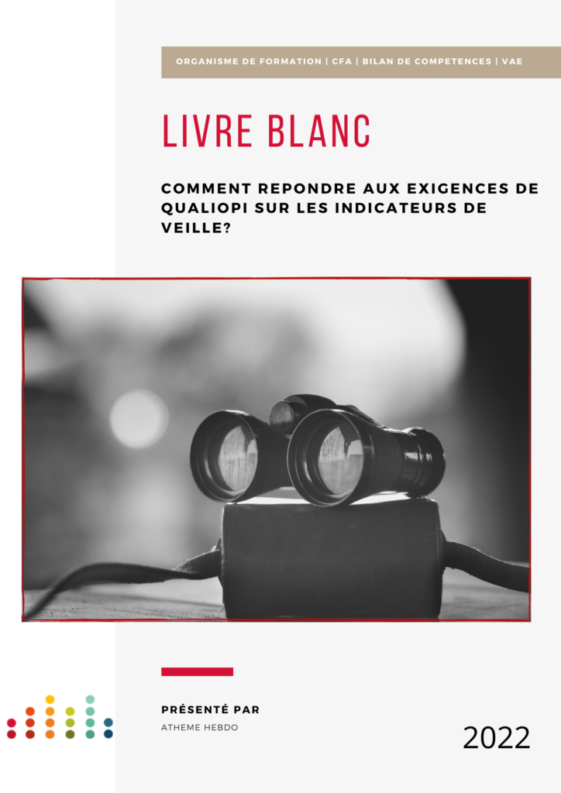

LIVRE BLANC : Découvrez comment répondre aux transparent exigences de QUALIOPI sur les transparent transparent indicateurs de veille !

Pour télécharger le livre blanc, remplissez le formulaire ci-dessous :

Pour télécharger le livre blanc, remplissez le formulaire ci-dessous :
Le livre blanc vous informe pour une veille efficace !
A l’approche du 1er janvier 2022 et conformément à la loi du 5 septembre 2018 pour la liberté de choisir son avenir professionnel, il est recommandé aux organismes de formation d’entamer leurs démarches de certification.
En effet, les organismes certifiés avant le 1er janvier 2022 seront considérés comme “respectant les obligations de qualité”. Obligations exigées par les financeurs.
En ce sens, les organismes dispensant des actions de formation doivent répondre aux exigences qualité de QUALIOPI.
Ces exigences ont été instaurées pour s’assurer que les organismes de formation ont la capacité à dispenser une formation de qualité.
En outre, QUALIOPI prévoit plusieurs exigences à respecter en matière de veille.
Ces dernières sont inscrites sur le référentiel au critère n°6 intitulé: “L’inscription et l’investissement du prestataire dans son environnement professionnel”.
L’ensemble des critères sera examiné lors de l’audit de certification (obligatoire le 1er janvier 2022). L’approbation de l’audit étant primordiale pour bénéficier de financements publics et paritaires.
Le Critère n°6 comporte 3 indicateurs de veille:
A cet effet, ce livre numérique vous informe sur la nature des indicateurs et le niveau attendu lors de l’audit.
En ce sens, Atheme hebdo vous apporte des conseils et astuces pour vous permettre la mise en place d’une veille efficace et conformes aux critères qualité !
Le livre blanc pour qui ?
Il s’adresse aux organismes de formation, aux Centres de Formation d’Apprentis, mais aussi aux structures proposant des bilans de compétences et de la validation des acquis de l’expérience – VAE.
ATHEME HEBDO – un outil de veille
L’hebdo répond à deux indicateurs sur les trois imposés par le Référentiel QUALIOPI. Véritable support, il permet aux organismes de s’inscrire et de s’investir dans leur environnement professionnel.
ATHEME Formation
55 rue Ligier 33000 Bordeaux
contact@atheme-formation.fr
06 16 92 05 64